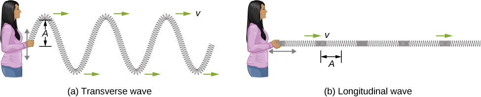

Welcome to my project blog in the DD1354 Models and Simulation course. My name is Azeez Daoud and I am here
to invite you to venture with me in world of WAVES!. It is a world full of differential equations,
numerical analysis, and a whole lot of springs and masses. Together we will build a assemble a system of
coupled springs and masses, shake the living out of it to produce two types of waves: transverse and
longitudinal waves. The former propagates through the medium by displacing it perpendicularly in the
direction of its motion. The latter displaces the medium in the direction of motion. This might seem quite
abstract, so here is an image showing the two types:

Image from
wikimedia.org
How do we visualise that? Well, we need 3 ingredients:
Physics
Numerical Analysis
Somewhere to do the simulation
Let us focus on the third point first by choosing a tool to do our simulation. I have decided to use The Unity Game Engine, because it is easy to use and gives very good results with as little of the nitty-gritty of setting up the code for graphical display.